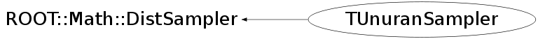

class TUnuranSampler: public ROOT::Math::DistSampler
Function Members (Methods)
public:
| TUnuranSampler() | |
| TUnuranSampler(const TUnuranSampler&) | |
| virtual | ~TUnuranSampler() |
| virtual bool | ROOT::Math::DistSampler::Generate(unsigned int nevt, ROOT::Fit::UnBinData& data) |
| virtual bool | ROOT::Math::DistSampler::Generate(unsigned int nevt, const int* nbins, ROOT::Fit::BinData& data, bool extend = true) |
| bool | ROOT::Math::DistSampler::Generate(unsigned int nevt, int nbins, double xmin, double xmax, ROOT::Fit::BinData& data, bool extend = true) |
| virtual TRandom* | GetRandom() |
| virtual bool | Init(const char* algo = "") |
| virtual bool | Init(const ROOT::Math::DistSamplerOptions& opt) |
| unsigned int | ROOT::Math::DistSampler::NDim() const |
| const ROOT::Math::IMultiGenFunction& | ROOT::Math::DistSampler::ParentPdf() const |
| virtual bool | Sample(double* x) |
| virtual double | Sample1D() |
| virtual bool | SampleBin(double prob, double& value, double* error = 0) |
| virtual bool | ROOT::Math::DistSampler::SampleBins(unsigned int n, const double* prob, double* values, double* errors = 0) |
| virtual void | SetArea(double area) |
| virtual void | SetFunction(const ROOT::Math::IGenFunction& func) |
| void | SetFunction(TF1* pdf) |
| virtual void | SetMode(double mode) |
| void | SetPrintLevel(int level) |
| virtual void | SetRandom(TRandom* r) |
| void | ROOT::Math::DistSampler::SetRange(const ROOT::Fit::DataRange& range) |
| void | ROOT::Math::DistSampler::SetRange(const double* xmin, const double* xmax) |
| void | ROOT::Math::DistSampler::SetRange(double xmin, double xmax, int icoord = 0) |
| virtual void | SetSeed(unsigned int seed) |
protected:
| bool | DoInit1D(const char* algo) |
| bool | DoInitDiscrete1D(const char* algo) |
| bool | DoInitND(const char* algo) |
| virtual void | ROOT::Math::DistSampler::DoSetFunction(const ROOT::Math::IMultiGenFunction& func, bool copy) |
| bool | ROOT::Math::DistSampler::IsInitialized() |
| const ROOT::Fit::DataRange& | ROOT::Math::DistSampler::PdfRange() const |
Data Members
private:
| double | fArea | area of dist |
| bool | fDiscrete | flag to indicate if the function is discrete |
| const ROOT::Math::IBaseFunctionOneDim* | fFunc1D | 1D function pointer |
| bool | fHasArea | flag to indicate if a area is set |
| bool | fHasMode | flag to indicate if a mode is set |
| int | fLevel | debug level |
| double | fMode | mode of dist |
| bool | fOneDim | flag to indicate if the function is 1 dimension |
| TUnuran* | fUnuran | unuran engine class |
Class Charts
{kind=link}
{kind=link}
{kind=link}
{kind=link}

Function documentation
bool DoInit1D(const char* algo)
initilize for 1D sampling need to create 1D interface from Multidim one (to do: use directly 1D functions ??)
void SetSeed(unsigned int seed)
set random generator seed (must be called before Init to have effect)
bool SampleBin(double prob, double& value, double* error = 0)
sample a bin according to Poisson statistics
void SetFunction(const ROOT::Math::IGenFunction& func)
set the parent function distribution to use for random sampling (one dim case)